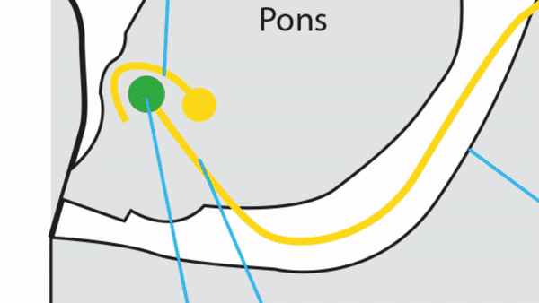

Sixth Nerve Pathways


-
Nuclear segment
- Lies in floor of fourth ventricle at pontomedullary junction
-
Internuclear segment
- Axons leave nucleus and travel in contralateral medial longitudinal fasciculus, ending on contralateral medial rectus subnucleus to mediate adduction of contralateral eye
-
Fascicular segment
- Axons proceed ventrally through pontocerebellar and corticospinal tracts to exit brainstem at pontomedullary junction eventually to supply ipsilateral lateral rectus muscle
- Activation of MLF and sixth nerve fascicles jointly produces ipsilateral gaze
-
Subarachnoid segment
- Nerve travels rostrally along clivus, passing through Dorello’s canal into cavernous sinus
-
Cavernous segment
- Nerve enters floor of cavernous sinus, where it lies inferolateral to internal carotid artery within venous plexus
-
Orbital segment
- Nerve enters orbit through superior orbital fissure within muscle cone to supply lateral rectus muscle




-
Nuclear lesion
- Congenital lesion usually affects only the fascicular neurons, sparing the interneurons that ascend in the MLF Duane Type 1 revised
- Aberrant innervation of the medial rectus muscle by axons from the defective sixth nerve nucleus produces co-contraction of medial and lateral rectus muscles on attempted abduction, narrowing of the palpebral fissure on adduction, and abnormal upshooting or downshooting of the eye on adduction
-
Depending on the proportion of innervation to the two extraocular muscles, different eye movement and alignment abnormalities occur
- Deficient abduction and esotropia (Duane retraction syndrome Type 1) Duane Type 1 revised
- Deficient adduction and exotropia (Duane retraction syndrome Type 2)
- Deficient abduction and adduction (Duane retraction syndrome Type 3) Duane types 2 and 3
-
Tip: in congenital sixth nerve nuclear lesions,horizontal gaze deficits do not occur because interneuronal axons that travel in MLF are spared
-
Acquired sixth nerve nuclear lesions affect both fascicular axons and interneuronal axons, producing
- Ipsilateral gaze palsy--impairment of all ipsilateral horizontal gaze movements, including saccades, pursuit, and vestibulo-ocular reflex
- Often accompanied by ipsilateral lower motor seventh nerve palsy because seventh nerve fascicles curl dorsally around sixth nerve nucleus before exiting brainstem 6th and 7th Nerve Palsies
- Common causes: stroke, hemorrhage, inflammation
-
Internuclear (medial longitudinal fasciculus) lesion
- Produces slow, reduced, or absent adduction of ipsilateral eye (“internuclear ophthalmoplegia”)
- Often accompanied by abducting nystagmus of contralateral eye
- Common causes: demyelination in youth and stroke in adults
-
Combined nuclear and ipsilateral internuclear lesion
- Produces ipsilateral gaze palsy (sometimes with contralateral gaze deviation) and adduction deficit of ipsilateral eye (“one-and-a-half syndrome”)
- Common causes: stroke, hemorrhage, inflammation
-
Fasicular lesion
- Produces impairment of ipsilateral abduction and usually esotropia Sixth Nerve Palsy
- May be accompanied by ataxia, nystagmus, ipsilateral facial and contralateral extremity weakness
- Common causes: stroke, hemorrhage, inflammation
-
Combined fascicular and ipsilateral internuclear lesion
- Produces ipsilateral abduction and adduction deficits
- Common causes: ischemic stroke, hemorrhage, inflammation
-
Subarachnoid lesion
- Produces ipsilateral abduction deficit and esotropia
-
Two kinds of palsies: “localizing” and “false-localizing”
- “Localizing palsy” caused by lesions along the subarachnoid course of sixth nerve, including head trauma, meningitis, subarachnoid hemorrhage, and masses of clivus and sphenoid bone/sinus
- False-localizing palsy: lesion not along the course of sixth nerve; instead, the palsy is caused by stretch on the sixth nerve from downward displacement of brain by intracranial hypertension or intracranial hypotension Intracranial Hypertension Intracranial Hypotension
-
Tip: localizing sixth nerve palsy often occurs at Dorello’s canal, which acts as a compartment; clival and sphenoid sinus masses or inflammation damage the nerve medially; petrous apex masses or inflammation damage the nerve laterally Petrous Lesion Revised
-
Tip: false-localizing sixth nerve palsy is also generated at Dorello’s canal, where altered intracranial pressure pushes brain downward and tugs on sixth nerve
-
Tip: inflammation of the petrous apex, which derives from middle ear and mastoid infection, can cause a very painful sixth nerve palsy, a condition known as Gradenigo syndromeGradenigo Revised
-
Cavernous Lesion
-
Produces ipsilateral abduction deficit and esotropia, exactly as do fascicular and subarachnoid lesions, except that there will be no signs of brainstem dysfunction and the palsy may be accompanied by
- Ipsilateral Horner syndrome
- Trigeminal deficits
- Third and fourth nerve palsies
- Common causes: cavernous aneurysms, tumors, venous thrombosis, fistulas, inflammations
-
Tip: unlike the other ocular motor nerves and two upper divisions of the trigeminal nerve, which lie in the outer wall of the cavernous sinus, the sixth nerve lies within the sinus, close to the carotid artery, making it especially vulnerable to cavernous aneurysms and high-flow fistulas Cavernous Sixth Nerve Activated Coronal With Lesion

-
Produces ipsilateral abduction deficit and esotropia, exactly as do fascicular and subarachnoid lesions, except that there will be no signs of brainstem dysfunction and the palsy may be accompanied by
-
Orbital lesion
- Causes ipsilateral abduction deficit and esotropia